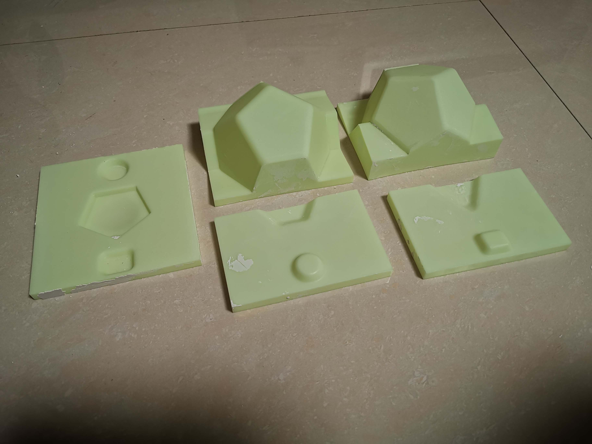
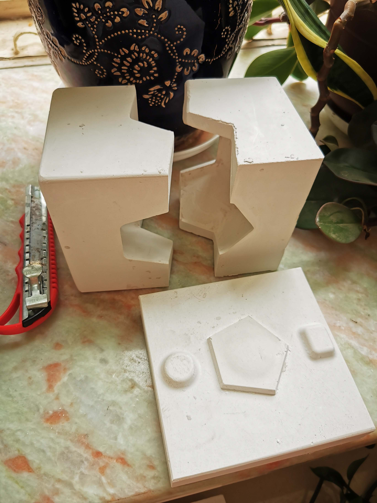
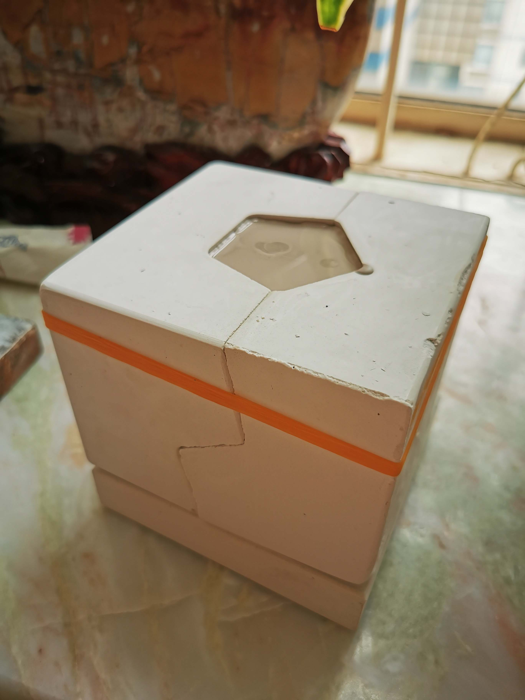
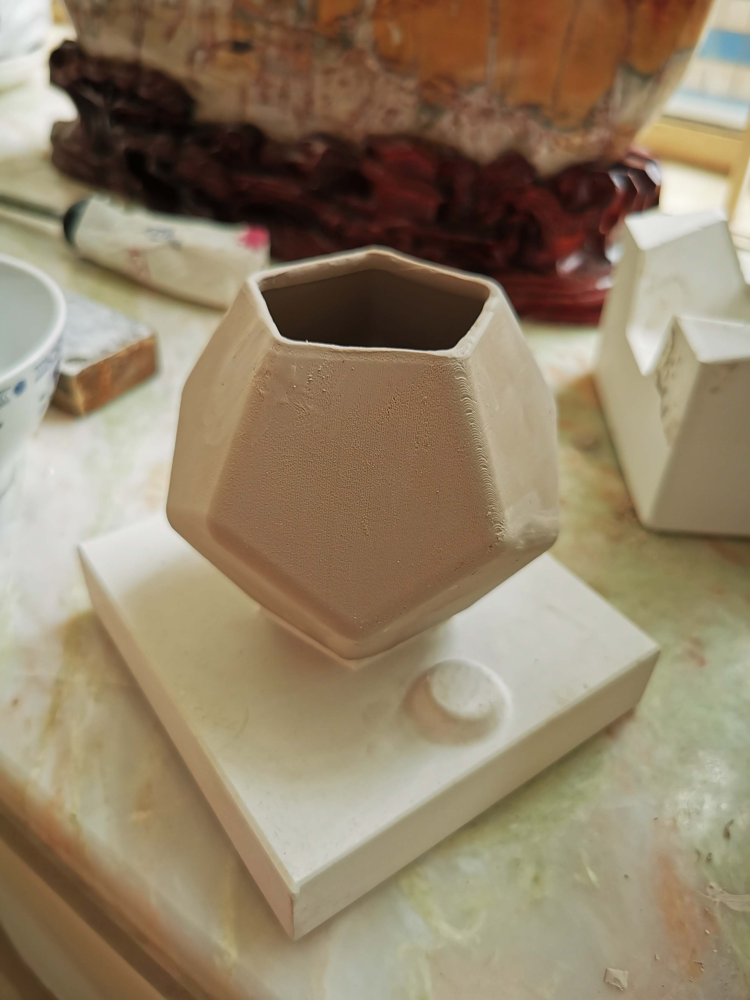
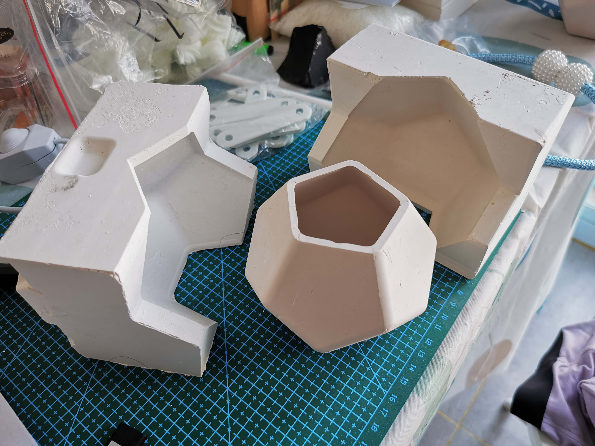

这是一项3d打印辅助陶器模具制作的尝试。
在现代，陶瓷器的批量化生产通常是借助石膏制的模具完成的。 这种模具有一定的吸水性，当把高岭土泥浆灌注在其中后，靠近石膏模具的泥浆的水分会被吸收掉一部分，这将导致这部分泥浆失去流动性。 灌注泥浆越5分钟后，将模具中仍可以流动的泥浆倒出（这部分泥浆可以复用）。石膏模具表面会残留数毫米厚的一层泥浆，这便是前面说的因失去水分失去流动性的泥浆。 静置晾干数小时后，开模，即可得到陶瓷器的土坯。 石膏模具晾干后可以复用。 为了制成生活中使用的陶瓷器，土坯一般还需要上釉、烧制等工序才能得到成品。但这些工序不在本次测试的范围内。 本次测试的重点在于测试借助计算机辅助设计技术和3d打印技术快捷而精确地制造石膏模具的可行性。
本次尝试分三个部分：使用3d打印技术制作树脂模具、使用树脂模具翻模制作石膏模具、使用石膏模具翻模制作陶器。 模具的设计是使用Grasshopper完成的。其结果使用光敏树脂进行3d打印，制成下图所示的浅黄色的模具。

使用该模具，并使用亚克力板包围出方形区域，灌注石膏浆，制成石膏模具，见下图。

灌注泥浆。

晾干后脱模。晾干后即得成品。


经测试，此流程是完全可行的。